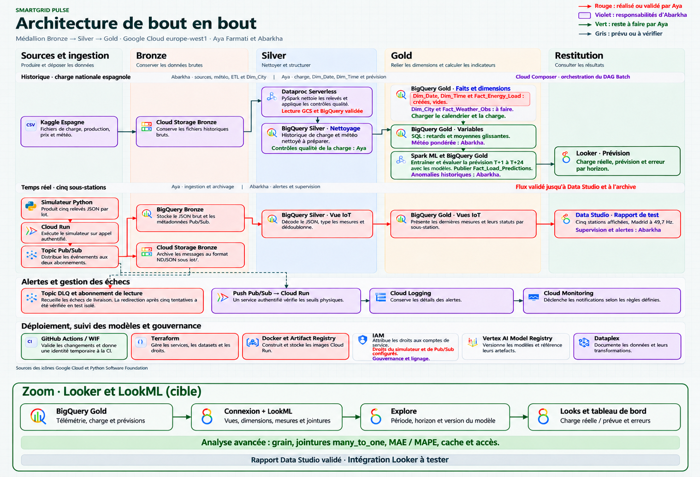

L’architecture et son état
Le projet suit deux flux. La télémétrie simule cinq stations et alimente la supervision. L’historique de charge nationale et de météo alimentera la prévision à court terme. Les deux flux utilisent les mêmes principes de qualité et les trois couches du médaillon.
- 1. Bronze
Conserve les messages bruts et les archives. Les fichiers historiques seront déposés dans un préfixe distinct de
iot/. - 2. Silver
Nettoie, type et dédoublonne. La vue
telemetry_cleanexiste. La préparation de l’historique reste à faire. - 3. Gold
Expose les faits, dimensions, résultats et vues métier. Looker lit les objets Gold via le modèle LookML.
Sources → Ingestion → Bronze → Silver → Gold → Looker / LookML
Rapport test Data Studio, archive, DLQ isolée et lectures Cloud Storage et BigQuery depuis Spark.
Charger ses trois tables Gold, préparer les variables, entraîner et évaluer le modèle, publier et restituer les prévisions.
Sources et ETL historiques, météo, Dim_City, anomalies, alertes et orchestration.
Looker et LookML font partie de l’architecture cible. La restitution déjà testée a été réalisée dans Data Studio. Les sections SCD, watermark et CDC décrivent des mécanismes d’ingénierie et leur usage possible dans le projet.
Suivre le relevé de Madrid à 49,7 Hz
- Générer. Une requête authentifiée sur
/simulatedéclenche l’application Python dans Cloud Run. L’application produit cinq relevés JSON et donne à chacun unevent_id. Lebatch_idregroupe les cinq relevés. Le code injecte49.7etUNDER_FREQUENCYpour Madrid dans ce scénario. - Publier. Le code lit la variable
PUBSUB_TOPICet publie surgrid-telemetry-topic. Pub/Sub attribue unmessage_idà chaque publication. Le compte de service Cloud Run a le droit de publier sur ce topic. - Livrer deux copies. Un abonnement écrit le message brut et ses métadonnées dans
bronze_smartgrid.streaming_raw_events. Un autre écrit une ligne JSON par message dans les fichiers NDJSON de Cloud Storage. Les deux abonnements consomment le même topic indépendamment. - Nettoyer. BigQuery Silver lit le JSON, convertit les types, vérifie les champs et les bornes, puis départage les copies par
event_id. Le relevé à 49,7 Hz reste recevable dans la plage de qualité 49–51 Hz. Il garde son statut de sous-fréquence. - Préparer l’affichage. La vue Gold
telemetry_latestconserve un seul relevé pardevice_id, ordonné d’abord par heure de mesure. Quand le rapport interroge cette vue, BigQuery exécute aussi la requête Silver. Le test Data Studio a affiché cinq stations.
Trois identifiants qui servent à des niveaux différents
batch_id regroupe un déclenchement du simulateur. event_id représente la mesure et sert de clé de dédoublonnage. message_id identifie la publication Pub/Sub et aide à suivre sa livraison.
Qualité d’une mesure et échec de livraison
Le statut UNDER_FREQUENCY décrit la mesure. La DLQ intervient quand un abonnement échoue à livrer un message à répétition. Le mécanisme de redirection a été vérifié lors d’un test isolé. Une alerte ou une notification métier relève d’un autre flux.
Application Python · Abonnement BigQuery · Abonnement Cloud Storage · Vue Silver · Vue Gold
Du fichier historique à la prévision
Fichiers historiques → Cloud Storage Bronze → PySpark sur Dataproc → Silver nettoyée → faits et dimensions Gold → variables SQL → Spark ML → prévisions Gold → Looker
- Déposer et nettoyer. Abarkha prépare les fichiers de charge et de météo. PySpark contrôle les types, les doublons, le fuseau source et les unités. Un contrôle de complétude repère les heures manquantes avant le calcul des variables.
- Fixer le grain.
Fact_Energy_Loadreprésente une ligne de charge nationale par heure UTC.Fact_Weather_Obsprévoit une ligne par ville et heure. Gold regroupe ces faits et les dimensions. Silver conserve les données nettoyées qui servent à les alimenter. - Joindre le calendrier. Aya utilise
Dim_DateetDim_Timeen heure localeEurope/Madrid.timestamp_utcgarde l’identité de l’heure. Au passage à l’heure d’hiver, deux heures UTC différentes peuvent partager la même heure affichée localement. - Préparer et évaluer. Les variables utilisent la charge passée et les attributs de calendrier disponibles à l’heure d’émission. Aya compare le modèle
GBTRegressorà une référence simple sur une période de test plus récente. La météo pondérée d’Abarkha peut enrichir la première version. - Publier. La cible est
Fact_Load_Predictions, avec l’heure d’émission, l’heure cible, l’horizon, la charge prévue en MW et la version du modèle. Looker lira les prévisions et les mesures réelles selon ces clés.
Dataproc a été validé en lecture sur une archive de télémétrie et sur Dim_Date. Dim_Date, Dim_Time et Fact_Energy_Load sont déjà créées en Gold et attendent leur chargement. Le job ETL, l’entraînement et l’écriture des prévisions restent à valider.
Terraform et le rôle des technologies
Le provider Google traduit les déclarations Terraform en appels GCP. Les références entre ressources transmettent les identifiants et donnent à Terraform un ordre de création. IAM indique qui peut effectivement utiliser chaque liaison.
# Relie un abonnement au topic déclaré dans le même projet Terraform.
topic = google_pubsub_topic.telemetry.id
# Transmet ce même identifiant à l’application Cloud Run.
env {
name = "PUBSUB_TOPIC"
value = google_pubsub_topic.telemetry.id
}terraform validate vérifie la configuration. terraform plan compare la configuration à l’état du projet et propose des changements. terraform apply les exécute. terraform.tfstate associe les ressources déclarées aux objets GCP réels. Ton état reste privé.
| Technologie | Rôle dans SmartGrid Pulse |
|---|---|
| Python, Docker, Artifact Registry | Python produit les relevés, Docker emballe le code avec ses dépendances et Artifact Registry stocke l’image utilisée par Cloud Run. |
| Cloud Run, Pub/Sub | Exécution à la demande du simulateur et distribution aux abonnements. La DLQ Pub/Sub conserve les échecs répétés de livraison. |
| Cloud Storage, BigQuery | Cloud Storage conserve des objets bruts. BigQuery exécute les requêtes SQL et fournit tables partitionnées et vues. Les partitions Bronze réduisent le volume interrogé sur une période. |
| Dataproc Serverless, PySpark, Spark ML | Dataproc lance un job Spark. PySpark décrit les transformations, et Spark ML entraîne le modèle de prévision. Le connecteur Spark BigQuery ouvre l’accès aux tables. |
| IAM, GitHub Actions, WIF | IAM porte les permissions. GitHub Actions est prévu pour les validations Terraform. WIF pourra fournir une identité temporaire à la CI. |
| Composer / Airflow | Orchestration prévue côté Abarkha. Un DAG décrit les tâches, leurs dépendances et leurs reprises sur erreur. |
| Cloud Logging, Cloud Monitoring | Logging collecte notamment les journaux des jobs Spark. Monitoring est prévu pour les règles et notifications d’incident. |
| Vertex AI Model Registry, Dataplex | Services prévus pour suivre les versions des modèles, cataloguer les données et décrire leur lignage. |
| Looker et LookML | Restitution cible directement sur Gold, avec définitions communes des champs et des métriques. |
Guide de déploiement · Provider et API · API du traitement Spark · Test de lecture Spark
SCD · garder l’histoire d’une dimension
Slowly Changing Dimension désigne une dimension dont certains attributs évoluent au fil du temps. Imagine que le poids démographique de Madrid change. Si on recalcule la météo nationale de l’année précédente, faut-il utiliser le poids de l’époque ou le poids actuel ? La réponse décide du type de SCD.
| Type | Règle | Exemple |
|---|---|---|
| SCD 0 | Conserver la valeur initiale. | Une clé de calendrier dérivée d’une date reste stable. |
| SCD 1 | Remplacer la valeur dans la ligne existante. | Corriger une faute dans un nom de ville. |
| SCD 2 | Fermer l’ancienne version et ajouter une ligne avec une nouvelle clé technique. | Garder chaque période de validité d’un poids démographique. |
| Clé métier | Clé de version | Poids | Début UTC | Fin UTC exclue |
|---|---|---|---|---|
| MADRID | 101 | 0,29 | 2024-01-01 | 2025-01-01 |
| MADRID | 205 | 0,31 | 2025-01-01 | NULL |
Une observation météo de 2024 se joint à la version 101. La jointure utilise la clé métier et l’intervalle de validité, ou directement la clé de version si elle a été résolue au chargement du fait. On vérifie l’absence de chevauchement et l’existence d’au plus une version courante par ville. Les dimensions calendrier existent en Gold. L’historisation SCD 2 de la ville est un exemple de conception à discuter avec Abarkha.
Watermark · gérer le retard et la reprise
Dans la télémétrie, event_time désigne l’heure de mesure et publish_time l’heure de publication. Si une mesure de 10 h 01 est publiée à 10 h 12 après un problème réseau, les deux horloges donnent des informations différentes.
Watermark de streaming
Dans un moteur à état comme Spark Structured Streaming, le watermark sert à faire avancer le temps événementiel et à libérer l’état de fenêtres anciennes. Avec une tolérance de 10 min, si l’heure d’événement maximale observée atteint 10 h 20, la borne peut avancer vers 10 h 10. Une mesure horodatée 10 h 15 peut encore participer au calcul selon la fenêtre. Une mesure à 10 h 03 peut être ignorée dans une agrégation dont l’état a été libéré. L’avancement effectif dépend du moteur, des micro-lots et de l’opération.
Point de reprise d’un batch incrémental
On appelle parfois aussi « watermark » le dernier curseur traité avec succès. Pour un futur chargement, on peut conserver une borne de publication et un identifiant de départage. À chaque lot, on lit jusqu’à une borne haute, on fusionne sur une clé stable, puis on avance le curseur après l’écriture réussie. Une fenêtre de recouvrement, rejouée de façon idempotente, peut récupérer des lignes arrivées tardivement.
La vue Silver actuelle applique un filtre SQL sur les sept derniers jours de publish_time. C’est une fenêtre de consultation. Elle ne mémorise aucun dernier lot traité et ne gère pas d’état de streaming.
CDC · transmettre les changements d’une source
Change Data Capture capture les créations, modifications et suppressions d’une table source. Une ingestion CDC transporte la clé de la ligne, son opération et un ordre de changement. Selon la source, ces opérations proviennent par exemple du journal de transactions.
| Ordre source | Clé | Opération | Effet sur une copie courante |
|---|---|---|---|
| 120 | ST-05 | INSERT | Créer la station. |
| 121 | ST-05 | UPDATE | Mettre à jour sa description. |
| 122 | ST-05 | DELETE | Retirer la station de la copie courante. |
En pratique, il faut gérer les doublons, les événements hors ordre, les suppressions et la reprise après incident. Le CDC natif BigQuery utilise la Storage Write API, une clé primaire déclarée et _CHANGE_TYPE avec UPSERT ou DELETE. _CHANGE_SEQUENCE_NUMBER permet de fournir un ordre par clé si nécessaire. CDC BigQuery
Dans SmartGrid Pulse, la télémétrie actuelle ajoute une nouvelle mesure à chaque événement. La vue Gold choisit ensuite la dernière mesure disponible. Un futur CDC aurait du sens si une base source publiait les modifications d’un référentiel. Le CDC transporte le changement, le watermark aide à gérer l’avancement et le SCD détermine comment conserver ses versions métier.
Relier BigQuery Gold à Looker avec LookML
Looker interroge BigQuery et présente les résultats. LookML est le langage qui décrit les champs, les métriques et les chemins de jointure. Un Look est une analyse enregistrée dans Looker. Le modèle de prévision, lui, est entraîné avec Spark ML et publie ses résultats dans Gold. Concepts LookML · Enregistrer un Look
BigQuery Gold → Connexion → Modèle LookML → Explore → Look → Tableau de bord


Ce que fait chaque objet
| Objet | À quoi il sert | Application SmartGrid Pulse |
|---|---|---|
| Connexion BigQuery | Fixe le dialecte SQL, le projet de facturation et le mode d’authentification. BigQuery exécute la requête générée. | Créer smartgrid_bigquery et tester l’accès au dataset Gold en europe-west1. |
| Vue LookML | Décrit un objet SQL et expose des champs réutilisables. Une dimension sert au filtrage ou au regroupement. Une mesure définit un calcul, par exemple un comptage distinct. | device_id, fréquence en Hz, statut et nombre de stations distinctes. |
| Modèle LookML et Explore | Le modèle sélectionne la connexion. Un Explore fournit un point de départ pour choisir les champs et définit les jointures disponibles. | Un Explore pour les dernières mesures et un autre pour la prévision. |
| Look et tableau de bord | Un Look conserve les champs, les filtres, le tri et la visualisation d’une requête. Un tableau de bord regroupe plusieurs analyses et leurs filtres. | Look « Stations en sous-fréquence », puis tableau de bord qui affiche aussi les mesures et la charge prévue. |
Premier branchement sur la vue de télémétrie
- Disposer d’une instance Looker et de droits de développement. Configurer une connexion BigQuery nommée
smartgrid_bigquerydans Looker. Donner à l’identité de connexion les droits de lecture de la vue et de ses sources, ou autoriser la vue selon la configuration BigQuery, ainsi que le droit d’exécuter des requêtes dans le projet de facturation. Configurer la connexion BigQuery - Ajouter au projet LookML une définition de vue pour l’objet BigQuery, un modèle pour sélectionner la connexion et un Explore pour permettre la consultation.
- Valider LookML dans l’instance, ouvrir l’Explore et contrôler que chaque station apparaît au plus une fois. Créer ensuite l’Explore de prévision sur les résultats Gold dès que la table existe.
Exemple de vue · telemetry_latest.view.lkml
view: telemetry_latest {
sql_table_name: `smartgrid-pulse.gold_smartgrid.telemetry_latest` ;;
dimension: device_id {
primary_key: yes
type: string
sql: ${TABLE}.device_id ;;
}
dimension_group: measured_at {
type: time
timeframes: [raw, time, date]
sql: ${TABLE}.event_time ;;
}
dimension: grid_status {
type: string
sql: ${TABLE}.grid_status ;;
}
dimension: is_alert {
type: yesno
sql: ${TABLE}.is_alert ;;
}
dimension: frequency_hz {
type: number
sql: ${TABLE}.frequency_hz ;;
}
measure: stations_count {
type: count_distinct
sql: ${device_id} ;;
}
measure: stations_in_alert {
type: count_distinct
sql: ${device_id} ;;
filters: [is_alert: "yes"]
}
}Exemple de modèle · smartgrid.model.lkml
connection: "smartgrid_bigquery"
include: "/telemetry_latest.view.lkml"
explore: telemetry_latest {
label: "Dernières mesures par station"
}Dans l’Explore, sélectionne la station, l’heure de mesure, la fréquence et le statut. Filtre sur UNDER_FREQUENCY et enregistre le Look « Stations en sous-fréquence ». Si le lot testé est encore visible sur la fenêtre de sept jours, la station en sous-fréquence est Madrid à 49,7 Hz. Pour un KPI séparé, sélectionne les mesures de comptage sans dimension de station et laisse le filtre d’alerte dans la mesure stations_in_alert. Ainsi, le compteur total couvre toutes les stations et le compteur filtré couvre les alertes.
Référence de la vue LookML · Filtres dans une mesure LookML
Modéliser la prévision pour l’analyse avancée
Un analyste doit pouvoir répondre à la question « la prévision de la veille à 24 h a-t-elle sous-estimé la pointe du soir ? ». Pour cela, le modèle doit préserver l’heure cible en UTC, l’heure d’émission et l’horizon.
| Sujet | Règle pour l’Explore de prévision |
|---|---|
| Grain et clé primaire | Une prévision par couple émission–cible et par version de modèle pour la série nationale. Créer une clé stable sur ces champs et tester son unicité avant de la déclarer primary_key: yes. Le fait de charge doit avoir une seule ligne par heure UTC. |
| Jointure et fan-out | Depuis les prévisions, joindre la charge réelle sur l’heure cible UTC. La relation attendue est many_to_one. Partir des prévisions et faire une jointure gauche conserve les heures futures. Un fan-out survient quand une jointure multiplie des lignes, par exemple avec plusieurs prévisions pour la même heure réelle. Déclarer la relation et les clés exactes pour que Looker puisse calculer correctement les agrégats. Agrégats symétriques |
| Filtres métier | Pour comparer deux courbes, fixer une version et un horizon, par exemple T+24. Pour explorer un épisode, filtrer la période et utiliser l’heure cible comme axe. Garder l’émission UTC, le modèle et l’écart en MW dans le détail. |
| MAE et MAPE | Sur les lignes avec mesure réelle, calculer AVG(ABS(prévu − réel)) en MW. Pour la MAPE, moyenner ABS(prévu − réel) / ABS(réel) lorsque le réel est non nul, puis multiplier par 100. Afficher le nombre de paires évaluées et comparer à une référence saisonnière sur le même ensemble de cibles et le même horizon. |
| Unités | La fréquence s’affiche en Hz et la charge en MW. Une somme de mesures en MW au fil du temps ne représente pas directement de l’énergie. Pour des puissances moyennes horaires, l’énergie en MWh s’obtient en multipliant chaque valeur par la durée en heures avant d’additionner. |
| Volume BigQuery | La table de charge exige un filtre de partition sur timestamp_utc. Prévoir un chemin SQL qui applique une période bornée directement au fait et vérifier le SQL généré, y compris lorsqu’une jointure est sollicitée. Mesurer les octets avant de publier le tableau de bord. Filtres de partition |
| Fraîcheur et cache | Afficher l’heure de la mesure pour la télémétrie et l’heure d’émission pour les prévisions. Une politique datagroup avec persist_with peut aligner le cache sur la disponibilité des données. Pour un futur batch, un identifiant de lot publié après succès est un meilleur déclencheur qu’un rafraîchissement fréquent à l’aveugle. Cache Looker et datagroups |
| Accès et qualité | Séparer les droits de lecture BigQuery, d’utilisation de l’Explore et de modification des tableaux de bord. Si les équipes doivent être limitées à certaines stations, prévoir des attributs utilisateur et un access_filter sur le champ concerné, puis tester avec un compte restreint. Filtrage par utilisateur |
Exemple cible de jointure LookML pour la charge réelle
Ce fragment suppose deux vues LookML à créer. forecast_runs expose target_hour_raw et actual_load_hourly expose observed_hour_raw et impose une période de lecture sur le fait partitionné. Les champs bruts préservent l’alignement des timestamps UTC.
explore: forecast_runs {
join: actual_load_hourly {
type: left_outer
relationship: many_to_one
sql_on: ${forecast_runs.target_hour_raw}
= ${actual_load_hourly.observed_hour_raw} ;;
}
}Par exemple, une prévision T+1 et une prévision T+24 peuvent viser la même heure. Les deux trouvent la même observation réelle. Si on affiche la courbe sans sélectionner un horizon et une version, on mélange plusieurs prévisions pour une même cible. Cardinalité des jointures LookML
Trois Looks pour la page de prévision d’Aya
- Charge réelle et prévue. Deux courbes par heure cible, avec filtres de période, horizon et version. Les valeurs réelles futures restent absentes jusqu’à leur réception.
- Erreur par horizon. MAE, MAPE et nombre de paires évaluées pour T+1 à T+24, avec comparaison à la référence.
- Pointes sous-estimées. Lignes horodatées, charge réelle, charge prévue et écart signé. Pour repérer les sous-estimations, calculer
réel − prévuet trier les écarts positifs les plus élevés.
Vérifier avant de publier
- Dans le mode développement de Looker, valider le modèle et ouvrir l’Explore. Vérifier que le SQL généré cible le projet et le dataset attendus.
- Comparer les résultats de télémétrie à une requête directe dans BigQuery et tester l’unicité de
device_id. - Quand l’extrait de charge et les prévisions seront disponibles, vérifier l’unicité des clés, rapprocher les totaux, tester la jointure sur un exemple avec plusieurs horizons et contrôler le filtre de partition.
- Vérifier les rôles de lecture et le coût estimé des requêtes, puis publier le modèle et les Looks destinés à la démonstration.
Les extraits LookML ciblent une vue Gold déjà déployée. La connexion, la validation LookML et l’Explore restent à tester sur une instance Looker. L’Explore de prévision dépend des futurs résultats Gold. Le rapport Data Studio existant atteste déjà que la vue de télémétrie est lisible.